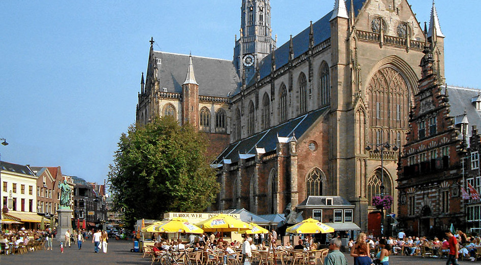

Haarlem is een Stad in Noord Holland, tevens is Haarlem ook de hoofdstad van Noord Holland. Na Amsterdam heeft Haarlem de meeste inwoners van Noord Holland.
Geschiedenis
Haarlem is al bekend sinds de 10e eeuw. In 1245 heeft Haarlem stadrechten gekregen en is blijven groeien dat het zelfs ongeveer 200 jaar later bij een van de belangrijkste Nederlandse steden behoord. Door het toenemede belang van Haarlem is in 1839 de eerste spoorlijn van Nederland aangelegd tussen Amsterdam en Haarlem.
Geloof en Politiek
Haarlem is zowel vroeger als nu grotendeels rooms-katholiek. De politieke grootste politieke partijen van Haarlem zijn D66, GroenLinks en de PvdA.
De Grote Markt
Midden in het oude centrum van Haarlem staat de Sint-Bavokerk, naast de kerk licht de grote markt. Al sinds de 13e eeuw wordt er hier vlees en vis verkocht. Naast de Sint-Bavokerk heeft Haarlem ook de Kathedrale basiliek Sint Bavo, beide zijn rooms-katholiek. Ook heeft Haarlem nog 22 hofjes, dit waren er meer dan 40 maar veel zijn er tussen 1700 en 1900 verdwenen.

Jiu Jitsu
Algemeen
Jiu Jitsu* is een zelfverdedigingssport (of zelfs zelfverdedigingskunst) afkomstig uit Japan. De jiujitsuka (leerling) leert het snel weren van een aanval maar leert ook een aantal aanvalstechnieken. Bij Jiu Jitsu wordt soms gebruik gemaakt van technieken die onsportief zijn, omdat Jiu Jitsu gebruikt wordt om te verdedigen wordt dit juist geaccepteerd.
Oorsprong
Het is niet bekend wanneer mensen zijn gestart met Jiu Jitsu, de orginele Jiu Jitsu wordt ook Yawara genoemt en komt uit Japan. Jiu Jitsu is in vele jaren tijd aangepast door de Samurai en de Japanse burgers. De moderne Jiu Jitsu komt voort uit de Judo, hieruit zijn technieken uit de Karate en Aikido toegevoegd.
Graduatiesysteem
Als beginner start je met de witte band, dit is de 6e Kyu. Hierna volgt de gele-, oranje-, groene-, blauwe-, en bruine band (5e t/m 1e Kyu). Hierna ga je verder met de 1e Dan, dit loopt op tot de 10e Dan. Dit zijn de meestergraden. De wachttijd tussen de Kyu banden is 6 maanden, tussen de Dan banden is dit minimaal 1 jaar (bij hogere zelfs langer!).
Scholen/ Clubs
Binnen Haarlem zijn veel clubs te vinden.
HwaRang Dragon Taekwondo & Gracie Jiu Jitsu
Deze school geeft Teakwondo, (Brazilian) Jui Jitsu en Mudo. De school zit op twee plekken; in Haarlem en Heemstede.